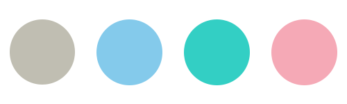
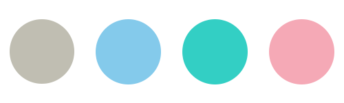

싱그러운 여름 라이트
#맑고 청량
#김태리
#실버 악세사리
자세한 결과
여름 라이트톤은 대체로 고명도의 은은한 파스텔 톤이 잘 어울리는 타입이에요. 여름 라이트 톤의 장점은 싱그러운 피부 톤이에요.
비비드한 색감의 트루 톤에 흰색이 섞인 톤이고 흰색이 섞여기 때문에 대체로 맑은 느낌을 주면서 채도가 낮고 밝은 파스텔 톤과 잘 어울려요.
라이트 톤 들에겐 상대적으로 연한 색 립이 잘 어울려요. 예를 들면 딸기우유, 맑은 핑크등 색상이 잘 어울려요.
비비드한 색감의 트루 톤에 흰색이 섞인 톤이고 흰색이 섞여기 때문에 대체로 맑은 느낌을 주면서 채도가 낮고 밝은 파스텔 톤과 잘 어울려요.
라이트 톤 들에겐 상대적으로 연한 색 립이 잘 어울려요. 예를 들면 딸기우유, 맑은 핑크등 색상이 잘 어울려요.
나와 어울리는 컬러는?


대표적인 연예인
손예진 정채연 김태리